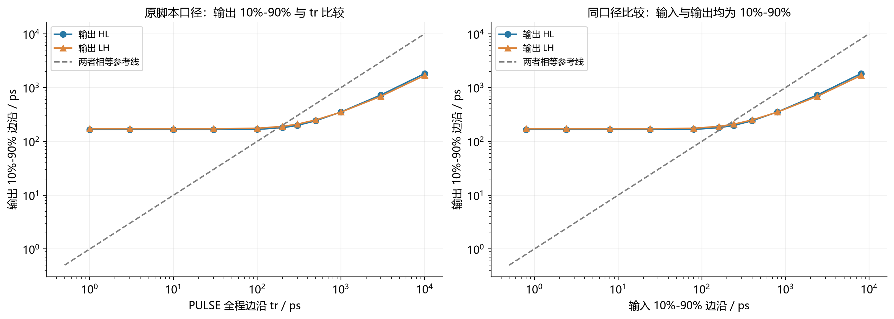

HW第 3 章HW实验的笔试整理
题目来源
HW5/resources/inverter-MicroLab6-slope/SKILL.md · 原题号 Q2
原题按原编号列出；实验题明确整理为读图或笔试问法。重复知识点保留各来源版本，避免漏掉不同参数与条件。
先读：本题所需概念
输出需充放电的总电容叫负载 ，包含驱动门自己的本征输出电容 和后级栅、连线等外部电容 。导通器件对这次充放电的等效电阻记 。一阶近似中，输出跨过一半电源电压的时间约为 。 按输出下降、上升命名；平均延时为两者均值。门输入电容记 ，外部负载与它的比叫电气扇出。某题若把常数吸收入拟合参数，须按该题显式模型使用。
知识出处：PPT/chapter3-inverter02-dynamic behavior_T 20260929.pdf，PDF 第 7–10、34–45 页。
回看完整解释：2.5 信号变化时，要等多久 · 9.1 先找输出节点连着哪些电容 · 9.2 为什么某个跨接电容有时按两倍算 · 9.3 再找电流经过哪条路径 · 9.4 把管做大能解决所有延时吗。题目中的专用参数以题干定义为准；可点带底纹的术语回查首次解释。
题目
原扫描参数为脉冲源从到的上升时间，输出测量为。图中输出边沿与横轴相交约为。①为什么这不是严格的同口径不变点？②线性输入的时间是多少？③统一口径后应怎样求交点？

查看答案与解析
答案与解析
横轴表示完整斜坡，输出只取中间，两者定义不同。线性输入有。因此同口径交点应解，而非。
原交点对应输出下降约、上升约，平均。统一为两端都后，交点的实际边沿约与，平均。数值只对该负载、尺寸和插值方法成立，不能把当成普适常数。